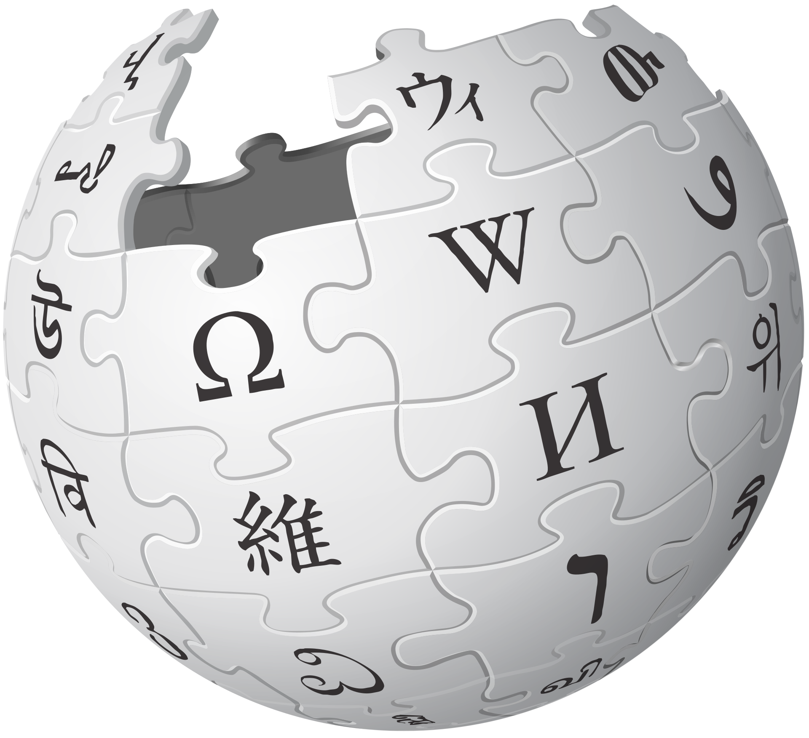

Вікіпедія перебуває на серверах Фонду Вікімедіа — неприбуткової організації, що також опікується рядом інших проєктів.
Ви можете підтримати нашу роботу пожертвою.Вікіпедія перебуває на серверах Фонду Вікімедіа — неприбуткової організації, що також опікується рядом інших проєктів.
Ви можете підтримати нашу роботу пожертвою.